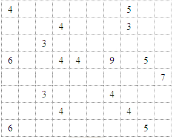
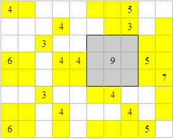
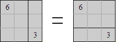
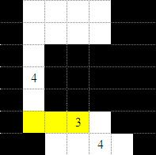

How To Play
The first thing you'll notice when you look at a Shikaku puzzle, is that it looks like a variation of a Suduko puzzle. Interestingly enough, even with the differences in the game, the "tricks" that help you solve a puzzle are very similar.

A more detailed explanation
The game is played in a grid like the one on the left. Sections are placed in such a way that they divide the grid so that each section covers a certain number of squares. The number of squares that a section covers should be the same as the only number it is over.
Boxes can only be square or rectangular (they can't go round corners) and are always greater than an area of 1. It's actually a very nice way to brush up on your times tables because of this. In larger more complex puzzles you end up having to do some quite interesting factorizations in your head.
What to do
The best way to start, is to work out what you know. This makes the whole puzzle a lot easier and the best way to help you solve the puzzle. Start with 9, the largest number in this puzzle. Possible solutions include 9 across, 9 up or 3*3. As neither 9 across nor 9 up fit, we can start by shading the only 3*3 that does.
As sections cannot overlap we can mentally note which squares are "reserved". I've represented this by shading those specific squares in yellow.
Initially this may look confusing and scary, but bear with me.
Let's now look at the 7. As we now know where the 9 goes the 7 is forced to go up and down. The height of the puzzle is 8, meaning there is no other alternative than two of its squares to be below and three above. This kind of thinking is the most effective way to solve a difficult puzzle and some may find shading a useful tool.
Another interesting number in this Shikaku puzzle is the lowest left 6. This 6 can either be made up of a 6 across, 3*2, 2*3 or 6 up. However, neither 6 across nor 6 up will fit. Hence a 3*2 or a 2*3 has to be the solution. Both valid factorization of 6, occupy the yellow highlighted squares adjacent to the 6 and so we can deduce that these squares are reserved.
The next thing to note is that unlike Sudoku, puzzles do not always have unique solutions. This puzzle has a number of different areas that in swapping one shape for another, doesn't actually affect the rest of the solution. That is to say that a 3*2 next to a 3, has no real effect on any other section, if switched around. In a simple puzzle, using intuition is often the quickest way to solve a puzzle.
For this guide, I created this puzzle especially to show a particular characteristic. This characteristic is not something you'll see every day as it requires a number of circumstances to come about. The puzzles on this site are generated automatically and in that regard are usually reasonably simple to solve using the techniques shown above.
To the left is a simple form of this characteristic.
If for example the 3 takes the highlighted section, it denies the lowest 4 occupying the square immediately above it. Hence 3 cannot occupy the section highlighted; implying that the section 3 occupies must shift one over to the right.
This characteristic can infinitely or recursively branch around an entire puzzle. There is one number in the puzzle below that fools you into thinking there are many possible solutions for it, even after applying all the logic detailed above. However the invalid positions of the sections can only be discovered by seeing that they force this characteristic.
Have a play; see if you can solve it. If you can find the piece I'm talking about, you'll have no trouble with any expert puzzle (the puzzle below is interactive).
|